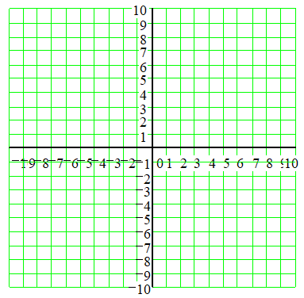

Students find this Lesson quite difficult; in fact, you may need to spend two sessions on the Lesson, one session on intercepts, factors and solutions, and one session on application problems.
Begin by pointing out that \(~ax^2+bx+c~\) is an expression, which we may be able to factor, \(~ax^2+bx+c=0~\) is an equation, which has solutions, and \(~y=ax^2+bx+c~\) is an equation in two variables, which we can graph.
Some students will not remember how to factor quadratic expressions; if so you will probably have to review factoring outside of class time. And although most students remember the zero-factor principle, they often do not apply it correctly. You will also need to spend some time discussing whether to use factoring or extraction of roots to solve a given equation. It is a good idea to keep quizzing students on their solving skills as we progress to each new solution technique.
Activity3.2.1.A Typical Quadratic Graph.
Verify that \(y=(2x-7)(x+1)\) is a quadratic equation. (Hint: Expand the right side.)
Graph \(y=(2x-7)(x+1)\) with technology. If you are using a graphing calculator, use the "friendly" window
Use the Trace feature to locate the \(x\)-intercepts of the graph.
Solve the equation
\begin{equation*}
(2x-7)(x+1)=0
\end{equation*}
Explain how your answers to parts (c) and part (d) are related.
Activity3.2.2.X-Intercepts.
Use technology to graph the three equations below in the standard window, and sketch the graphs on the grid at right. What do you notice about the \(x\)-intercepts?
\(\displaystyle y=x^2-2x+15\)
\(\displaystyle y=3(x^2-2x+15)\)
\(\displaystyle y=0.2(x^2-2x+15)\)

Multiplying a quadratic expression by a constant does not change the \(x\)-intercepts of the graph.
Solve by factoring \(~~20x^2-40x-700 = 0\text{.}\)
Graph \(~~y=0.1(x^2+9x-360)~~\) on your calculator, using the ZInteger setting.
Locate the \(x\)-intercepts of the graph.
Use the \(x\)-intercepts to write the quadratic expression in factored form. (Do not try to factor the expression!)
Activity3.2.3.A Quadratic Model.
A rancher has 360 yards of fence to enclose a rectangular pasture. If she uses a riverbank to border one side of the pasture, she can enclose 16,000 square yards of land. What will the dimensions of the pasture be then?
We’ll solve this problem in three different ways. First, make a sketch of the pasture and the river.
Method 1: Using a Table of Values.
Notice that you only have 360 yards of fence. So if you decide how wide the pasture is going to be, the length of the pasture is determined.
Use the perimeter of the pasture, 360 yards, to write a formula for the length of the pasture in terms of its width. (Be careful: remember that one side of the pasture does not need any fence!)
Length =
Make a table that shows the areas of pastures of various widths.
Width
Length
Area
10
340
3400
\(\hphantom{000000}\)
\(\hphantom{000000}\)
\(\hphantom{000000}\)
\(\hphantom{000000}\)
\(\hphantom{000000}\)
\(\hphantom{000000}\)
\(\hphantom{000000}\)
\(\hphantom{000000}\)
\(\hphantom{000000}\)
\(\hphantom{000000}\)
\(\hphantom{000000}\)
\(\hphantom{000000}\)
\(\hphantom{000000}\)
\(\hphantom{000000}\)
\(\hphantom{000000}\)
\(\hphantom{000000}\)
\(\hphantom{000000}\)
\(\hphantom{000000}\)
Continue the table until you find the pasture whose area is 16,000 square yards.
Dimensions of pasture:
Method 2: Using a Graph.
On your sketch of the pasture in part (1), label the width of the pasture as \(x\text{.}\)
Write an expression for the length of the pasture if its width is \(x\text{.}\) (Hint: How did you compute the length of the pasture in Method 1?
Length =
Write an expression for the area \(A\) of the pasture if its width is \(x\text{.}\)
Area =
Use technology to graph the equation for \(A\text{.}\) If you use a calculator, set the window at
On the graph, find the pasture of area 16,000 square yards. Label the correct point on your graph.
Dimensions of pasture:
Method 3: Using an Equation.
Refer to steps (a) and (b) of Method 2, and write an equation for the area \(A\) of the pasture in terms of its width \(x\text{.}\)
Area =
Substitute \(A = 16,000\) and solve your equation algebraically.
Dimensions of pasture:
Which of the three methods do you prefer? Why?
Subsection3.2.1Check Your Understanding
Delbert says that the solutions of the equation \(~4(x-2)(x+1)=0~\) are \(x=4,~x=2\) and \(x=-1\text{.}\) Do you agree? Why or why not?
If the perimeter of a rectangle is 56 inches, and its width is \(w\) inches, write an expression for its length.
How can you use a graph to factor a quadratic expression?
In Method 2 of the Quadratic Model, what did the two variables on the graph represent? What happened to the second variable as you increased the first variable?
Subsection3.2.2Wrap Up
In this Lesson, we worked on the following skills and goals related to quadratic models:
Solve quadratic equations by factoring
Find a quadratic equation with given solutions
Find the \(x\)-intercepts of a parabola
Solve problems involving perimeter and area or the Pythagorean theorem
Subsection3.2.3Questions for Writing or Discussion
How can you use a graph to factor a quadratic expression?
How are the factors of \(~ax^2+bx+c~\) related to the \(x\)-intercepts of the graph of \(~y=ax^2+bx+c\text{?}\)
Explain why the solutions of \(~(x-3)(x-6)=1~\) are not 3 and 6.
Explain why we cannot "cancel" \((x-5)\) from both sides of the equation \(~3x(x-5)=6(x-5)~\text{.}\) What are the solutions of the equation?
Concept Questions.
What are the \(x\)-intercepts of \(~y=3(2x-7)(x+2)\text{?}\)
\(\dfrac{7}{2}\) and \(-2\)
\(\dfrac{-7}{2}\) and \(2\)
\(3,~\dfrac{7}{2}\) and \(-2\)
\(3,~\dfrac{-7}{2}\) and \(2\)
What happens to the \(x\)-intercepts when you multiply the right side of \(~y=ax^2+bx+c~\) by 3?
The are tripled
They are divided by 3
They move 3 units to the right
They are unchanged
If the perimeter of a rectangle is 56 inches and its width is \(x\) inches, what is an expression for its length?
\(\displaystyle 56-x\)
\(\displaystyle 28-x\)
\(\displaystyle 56x\)
\(\displaystyle \dfrac{28}{x}\)
Which statement is true?
All rectangles with the same perimeter have the same area.
The solutions of \(~x(18-x)=80~\) are \(x=80\) and \(x=18\text{.}\)
If the perimeter of a rectangle is 20 cm, the largest area it can have is 20 sq cm.
If you know the \(x\)-intercepts of the graph of \(~y=ax^2+bx+c~\text{,}\) you can write it in factored form.